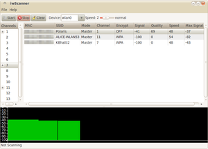

iwScanner
Dieser Artikel wurde für die folgenden Ubuntu-Versionen getestet:
Ubuntu 14.04 Trusty Tahr
Zum Verständnis dieses Artikels sind folgende Seiten hilfreich:
iwScanner  ist ein kleines grafisches Werkzeug, um einen Überblick der benachbarten Funknetzwerke (WLAN Access Points) zu erhalten. Solche Programme werden auch als WLAN-Sniffer bezeichnet. Es erreicht zwar nicht den Funktionsumfang des Windows-Werkzeugs Netstumbler, aber zur Ermittlung der Eckdaten von Funknetzwerken wie
ist ein kleines grafisches Werkzeug, um einen Überblick der benachbarten Funknetzwerke (WLAN Access Points) zu erhalten. Solche Programme werden auch als WLAN-Sniffer bezeichnet. Es erreicht zwar nicht den Funktionsumfang des Windows-Werkzeugs Netstumbler, aber zur Ermittlung der Eckdaten von Funknetzwerken wie
WLAN-Name (SSID)
Kanal (Channel)
Signalstärke
Verschlüsselungsart
ist es gut geeignet. Die Programmoberfläche ist in Englisch, aber sehr einfach gestaltet. Erstellt wurde iwScanner mit Python. Das Programm ist nicht die einzige Möglichkeit, WLAN-Netzwerke grafisch anzuzeigen. Eine Alternative ist das neuere LinSSID.
Installation¶
 Das Programm ist nicht in den offiziellen Paketquellen enthalten (494580).
Das Programm ist nicht in den offiziellen Paketquellen enthalten (494580).
Voraussetzungen¶
Die folgenden Pakete werden als Abhängigkeit benötigt, aber nicht automatisch installiert [1]:
python-glade2
gksu (ab Ubuntu 14.04 in universe)
 mit apturl
mit apturl
Paketliste zum Kopieren:
sudo apt-get install python-glade2 gksu
sudo aptitude install python-glade2 gksu
Fremdpaket¶
Von der Homepage kann ein Fremdpaket  (als .deb) heruntergeladen und manuell installiert [2] werden.
(als .deb) heruntergeladen und manuell installiert [2] werden.
Hinweis!
Fremdpakete können das System gefährden.
Bedienung¶
Anschließend kann das Programm bei Ubuntu-Varianten mit einem Anwendungsmenü über den Eintrag "Systemwerkzeuge -> iwScanner" aufgerufen werden.
Beim Programmstart wird das Root- bzw. Administrator-Kennwort abgefragt. Dies ist notwendig, da nur so alle verfügbaren Funknetze zuverlässig erkannt werden. Hintergrund: zum Ermitteln der Funknetze nutzt iwScanner intern den Befehl "iwlist NETZWERKSCHNITTSTELLE scan" und dieser arbeitet nur korrekt, wenn er mit Root-Rechten gerufen wird (siehe man iwlist). Das Programm stellt dann die Ausgabe des Befehls grafisch dar.

Die Nutzung des Programms gestaltet sich einfach: man wählt die WLAN-Schnittstelle (Device, z.B. wlan0) aus und betätigt die Schaltfläche "Start". Nach einiger Zeit werden nun die gefundenen Funknetzwerkwerke inklusive ihrer Parameter aufgelistet. Dieser Vorgang wird durch die Schaltfläche "Stop" abgebrochen. Mit "Clear" löscht man die Liste der gefundenen Funknetzwerke wieder. Über einen Schieberegler lässt sich zusätzlich die Intensität des Netzwerk-Scans in vier Stufen einstellen.
Hinweis:
Man sollte das Programm längere Zeit laufen lassen, da manche WLANs nicht sofort gefunden werden.
Unterhalb der Ergebnisliste wird die Signalstärke des ausgewählten Access Points grafisch dargestellt. Die Ergebnisse können auf Wunsch in den Formaten
NS1 (Netstumbler-kompatibel)
NDD (NetDetect-kompatibel)
abgespeichert werden.
Problembehebung¶
Programmstart¶
Je nach Ubuntu-Version können beim Programmstart über den Menü-Eintrag Probleme auftreten. Dann kann man versuchen, die Datei /usr/share/applications/kuthulu-iwscanner.desktop mit einem Editor [3] und Root-Rechten [4] zu bearbeiten und gksudo aus der Zeile:
Exec=gksudo /usr/share/iwscanner/iwscanner.py
zu entfernen. Nun startet iwScanner zwar ohne Root-Rechte, aber nur so ist ein Programmstart überhaupt erst möglich.
 Übersichtsartikel
Übersichtsartikel- Erstellt mit Inyoka
-
 2004 – 2017 ubuntuusers.de • Einige Rechte vorbehalten
2004 – 2017 ubuntuusers.de • Einige Rechte vorbehalten
Lizenz • Kontakt • Datenschutz • Impressum • Serverstatus -
Serverhousing gespendet von